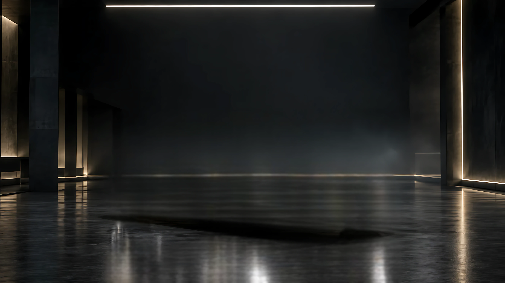
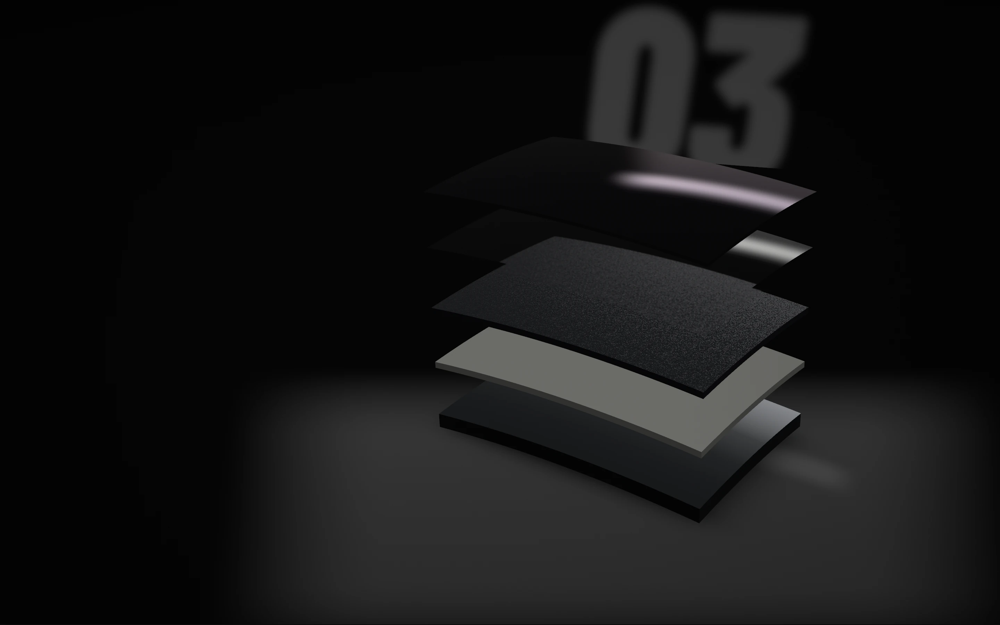
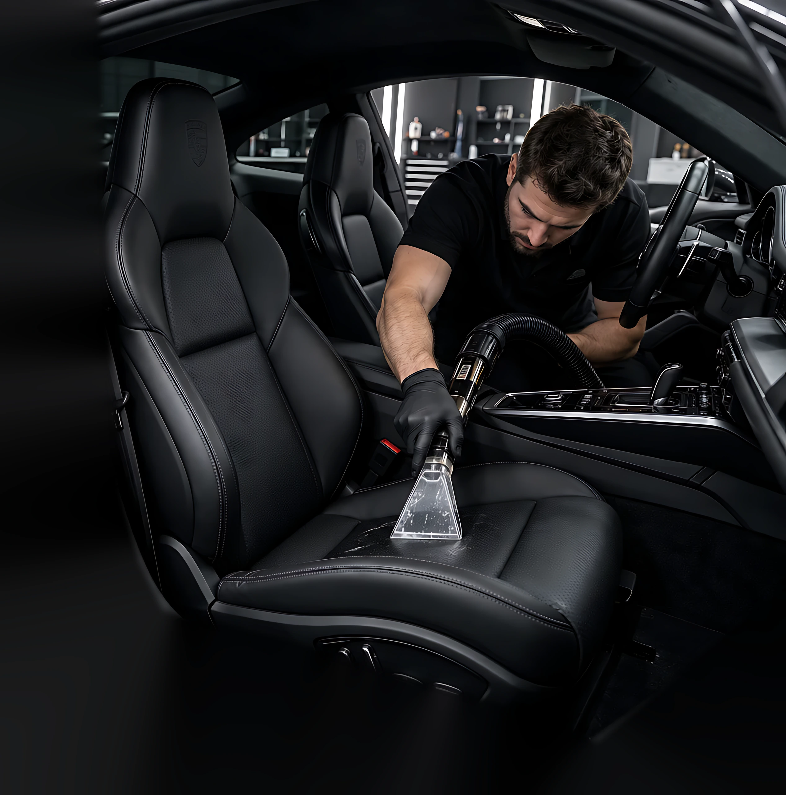

JETCAR · Quem somos
Cuidado automotivo feito nos detalhes.
Uma oficina de estética automotiva na Rua José Trajano, em Boa Viagem, no Recife, a poucas quadras da praia. Há mais de cinco anos, lavagem técnica, polimento e correção de pintura, Ceramic Coating, PPF e higienização interna, com uma regra que vale para tudo: cada carro é um trabalho de detalhe.
- 5+anos de experiência
- 10profissionais na equipe
- 6serviços de estética e proteção
- 3clientes falando aqui embaixo
- LocalRua José Trajano, 196
Boa Viagem, Recife, PE - HorárioSegunda a sexta, 08h às 17h
Sábado, 07h às 17h - ContatoInstagram @jetcarbv
WhatsApp (81) 99751-5541
contato@jetcarestetica.com.br - AtendimentoCom hora marcada, sem fila. A equipe confirma pelo WhatsApp.

Como começou
Tratar cada carro como se fosse nosso.
“A Jetcar nasceu com uma ideia clara: tratar cada carro como se fosse nosso, cuidando de cada detalhe da pintura, por dentro e por fora.”
Dessa ideia vieram mais de cinco anos de trabalho em Boa Viagem, com processos técnicos e produtos profissionais em cada etapa. Lavagem detalhada, correção de pintura e proteção cerâmica são feitas com foco na segurança do verniz e em um resultado consistente.
A estrutura acompanha: um box preparado para estética automotiva, com boa iluminação e equipamentos específicos para polimento e lavagem. Mais rapidez no serviço, sem descuidar da pintura.
No que a JETCAR acredita
Não olhamos só para a sujeira.
- 01
Cada carro é um trabalho de detalhe
Não existe serviço padrão. O que vai ser feito depende do estado da pintura, do uso que o carro tem no dia a dia e do nível de proteção que você quer.
- 02
Acabamento, proteção e conforto
Limpar é o começo. O trabalho está em preparar a superfície, corrigir o que dá para corrigir e proteger o que foi recuperado, por fora e por dentro.
- 03
O carro como um investimento
A JETCAR cuida do carro como algo que vale a pena preservar: pintura protegida contra sol, chuva e sujeira, interior cuidado e uma lavagem mais fácil depois.
Quem faz a JETCAR
Dez profissionais. Três deles à frente do trabalho.
Uma equipe de dez pessoas cuida de cada etapa, da chegada do carro à entrega. Quem coordena, detalha e executa:
- JJoãoCoordenador de Estética
- RRafaelEspecialista em Detalhamento
- MMarcosTécnico em Estética Automotiva
Como a JETCAR trabalha
Tudo alinhado antes, sem surpresa em preço ou prazo.
Na JETCAR o processo é simples: você agenda, a equipe avalia o carro na chegada e indica o serviço ideal para o estado da pintura. Escolha uma etapa para ver o que acontece nela.
Você marca pelo Direct, pelo WhatsApp ou pelo e-mail, ou monta o pedido no site e manda a mensagem pronta. A equipe confirma tudo com você pelo WhatsApp. Horário marcado, sem fila.
Na chegada, a equipe avalia o carro: o estado da pintura, o uso que ele tem no dia a dia e o nível de proteção que você quer. Com a iluminação certa, os riscos e as marcas aparecem.
Só então vem a indicação: o serviço ideal para o estado da pintura, com preço e prazo alinhados antes de começar. Sem surpresa.
Cada etapa prepara a seguinte: a lavagem antes do polimento, a correção antes do coating ou da película. Máquinas específicas, produtos profissionais e técnica, dentro dos limites do verniz. Uma lavagem leva de 20 a 40 minutos; um polimento, de 6 a 12 horas.
Você recebe o carro com as orientações de cuidado: como fica a manutenção do que foi feito e o que fazer no dia a dia para o resultado durar.
O que a JETCAR faz
Seis serviços, uma ordem que faz sentido.
Abra cada um para ver o que é feito, com a cena do serviço no site.
01Lavagem técnica
Feita à mão, sem agredir a pintura. De 20 a 40 minutos.
Lavagem técnica
Feita à mão, sem agredir a pintura. De 20 a 40 minutos.Mais do que jogar água e sabão: um processo manual que remove sujeira acumulada, poeira e contaminantes da superfície da carroceria, com shampoos automotivos de pH equilibrado, técnica suave e secagem correta, sem marcas de água. Normalmente é o primeiro passo antes de qualquer outro serviço.
- Remoção de sujeira, poeira e resíduos de asfalto
- Lavagem manual, mais segura para o verniz
- Shampoos automotivos e produtos de alta performance
- Secagem correta, sem manchas de água
- Preparo ideal para ceras e proteções
02Polimento e correção de pintura
Corrige riscos leves, marcas de lavagem e opacidade. De 6 a 12 horas.
Polimento e correção de pintura
Corrige riscos leves, marcas de lavagem e opacidade. De 6 a 12 horas.A luz de inspeção revela as marcas finas no verniz. Com máquinas apropriadas, boinas específicas e compostos de corte e refino, o polimento técnico faz a remoção controlada dos defeitos superficiais e devolve profundidade, brilho e clareza à cor, sempre dentro dos limites do verniz. Riscos muito profundos podem não sumir por completo, mas ficam bem menos aparentes.
- Redução ou remoção de micro-riscos e marcas circulares
- Menos oxidação e aspecto apagado
- Mais profundidade de cor e brilho
- Acabamento uniforme
- Preparo da superfície para o Ceramic Coating ou o PPF
03Ceramic Coating
Revestimento sobre o verniz: mais brilho, lavagem mais fácil, proteção.
Ceramic Coating
Revestimento sobre o verniz: mais brilho, lavagem mais fácil, proteção.Camada protetora de alta durabilidade aplicada sobre o verniz, depois da preparação da pintura. Intensifica o brilho, facilita a lavagem e ajuda a proteger contra sol, chuva, sujeira do dia a dia, fezes de aves e insetos. Conforme a necessidade do carro, a proteção pode ser com selante em vez do cerâmico. Na entrega, a equipe explica como fica a manutenção.
Ver a cena no site
04PPF, película de proteção
Película transparente sobre a pintura, nas áreas que você combinar.
PPF, película de proteção
Película transparente sobre a pintura, nas áreas que você combinar.Paint Protection Film: uma película transparente aplicada sobre a pintura, nas áreas do carro que você combinar com a equipe. Dá para usar o PPF, o Ceramic Coating ou os dois.
Ver a cena no site05Higienização interna
Aspiração minuciosa, painéis, portas, consoles e vidros.
Higienização interna
Aspiração minuciosa, painéis, portas, consoles e vidros.Higienização completa do interior: aspiração minuciosa de carpetes e estofados, limpeza de painéis, portas, consoles e vidros, removendo poeira, manchas leves e odores. Couro, acabamentos, superfícies e detalhes: o tipo de revestimento muda o cuidado, então conte o que tem no seu.
Ver a cena no site06Remoção de odores
Cigarro, mofo, comida, animais: atacando a fonte.
Remoção de odores
Cigarro, mofo, comida, animais: atacando a fonte.Tratamento para eliminar cheiro de cigarro, mofo, comida, animais e outros odores fortes. A equipe ataca a fonte do problema e deixa o interior limpo, fresco e confortável de novo.
Pedir no agendamentoPerguntas sobre os serviços
Prazos, frequência e o que esperar.
As respostas que a JETCAR dá para as perguntas mais comuns sobre a lavagem e o polimento. Outras perguntas estão no site.
Quanto tempo leva a lavagem técnica?
Em média, de 20 a 40 minutos, dependendo do tamanho do carro e do nível de sujeira no dia.
A lavagem manual é melhor do que a automática?
Sim. A lavagem manual, feita com as técnicas corretas, é mais segura para a pintura, reduz o risco de riscos circulares e permite a atenção aos detalhes que a máquina não alcança.
Com que frequência devo lavar o carro?
Em uso normal de cidade, a cada uma ou duas semanas. Com muita chuva, maresia ou poeira, vale encurtar esse intervalo.
Os produtos agridem a pintura ou o meio ambiente?
Shampoos automotivos com pH equilibrado e produtos selecionados para serem seguros para o verniz e para as partes plásticas e, sempre que possível, menos agressivos ao meio ambiente.
Quanto tempo leva o polimento?
Em média, de 6 a 12 horas, dependendo do tamanho do carro e do nível de defeitos na pintura. Em casos mais complexos, pode ser preciso um tempo adicional para o acabamento.
O polimento remove todos os riscos?
Corrige a maior parte dos riscos superficiais, marcas de lavagem e defeitos que estão no verniz. Riscos muito profundos podem não desaparecer por completo, mas costumam ficar bem menos aparentes.
Por quanto tempo o resultado do polimento dura?
Com lavagens corretas e, de preferência, uma proteção por cima (Ceramic Coating ou PPF), o resultado pode se manter por anos, preservando o brilho e a uniformidade da pintura.
O polimento é seguro para a pintura?
Sim, quando feito por profissionais treinados e com os equipamentos adequados. A JETCAR trabalha dentro dos limites do verniz, corrigindo defeitos sem comprometer a integridade da pintura.

O que dizem os clientes
Três clientes, três serviços.
Os depoimentos publicados pela JETCAR. Passe para o lado ou use as setas.
“Fiz a correção de pintura e o revestimento cerâmico na Jetcar e o resultado me surpreendeu. O carro parece outro, o brilho é absurdo e a lavagem ficou muito mais fácil. Atendimento atencioso do início ao fim. Recomendo sem pensar duas vezes.”
“Uso o carro todo dia para trabalho e já tinha muitos micro-riscos e marcas de lavagem. Depois do serviço da Jetcar, a pintura ficou uniforme, com brilho forte e sem aquelas marcas que me incomodavam. Valeu cada minuto que o carro ficou parado.”
“Levei meu carro para uma higienização interna completa e lavagem detalhada. Quando peguei de volta, parecia carro de loja: cheiro agradável, tudo muito bem limpo e sem aqueles detalhes esquecidos. Dá para ver o cuidado em cada parte do serviço.”
Onde e quando

Rua José Trajano, 196
Boa Viagem, Recife, Pernambuco. A poucas quadras da Praia de Boa Viagem: entrando pela orla, são poucos minutos até a porta.
Coordenadas: 08°07′14″S · 34°53′58″O
Seg a sex 08h às 17h · Sáb 07h às 17h
Mapa: dados © OpenStreetMap.
Antes de levar o carro
Bom saber.
- Agende antesO atendimento é com hora marcada, sem fila. Combine pelo Direct, pelo WhatsApp ou pelo e-mail, ou monte o pedido no site e mande a mensagem pronta. A equipe confirma tudo com você pelo WhatsApp.
- Conte como o carro estáRiscos, manchas, opacidade, o interior: quanto mais você contar, mais precisa fica a avaliação na chegada.
- Preço e prazo vêm depois da avaliaçãoDependem do carro, do estado dele e do serviço. A equipe passa os dois antes de começar, e nada muda sem combinar com você.